Fine Art Photography
Fotografia autoriale e sperimentazione formale, tra interpretazione e composizione.
Fotografia, arte visiva e direzione creativa. Un linguaggio essenziale, costruito sulla luce, sul contrasto e sulla presenza.
Scopri l'identitàSalvatore Sinatra è un fotografo freelance e artista visivo con base a Caltagirone, in Sicilia. La sua attività si sviluppa tra fotografia d'autore, linguaggio editoriale, ritratto e osservazione del paesaggio urbano e naturale.
Il bianco e nero rappresenta una scelta estetica centrale: non una semplice sottrazione cromatica, ma uno strumento per leggere struttura, profondità, ritmo e atmosfera.
La filosofia visiva ↗Fotografia autoriale e sperimentazione formale, tra interpretazione e composizione.
Progetti visivi con attenzione all'identità, alla sequenza e alla coerenza narrativa.
Ritratto come incontro tra individualità, espressione e luce.
Geometrie, luoghi, architetture e paesaggi osservati attraverso un'estetica essenziale.
«Non cerco immagini perfette: cerco immagini con presenza. Ogni fotografia è una scelta.»
Caltagirone e la Sicilia costituiscono un riferimento geografico e culturale. Architetture, spazi pubblici, memoria dei luoghi e trasformazioni della luce alimentano uno sguardo rivolto tanto al dettaglio quanto alla dimensione urbana e paesaggistica.
Questo sito presenta l'identità professionale e le aree di attività. Le fotografie originali potranno essere integrate in successive gallerie dedicate, senza sostituzioni sintetiche.
Approfondisci la presenza digitale e i progetti fotografici.
Una selezione di fotografie dell’archivio, presentate senza ritagli, filtri o alterazioni nel layout. I file sono pubblicati così come presenti nei pacchetti fotografici forniti.
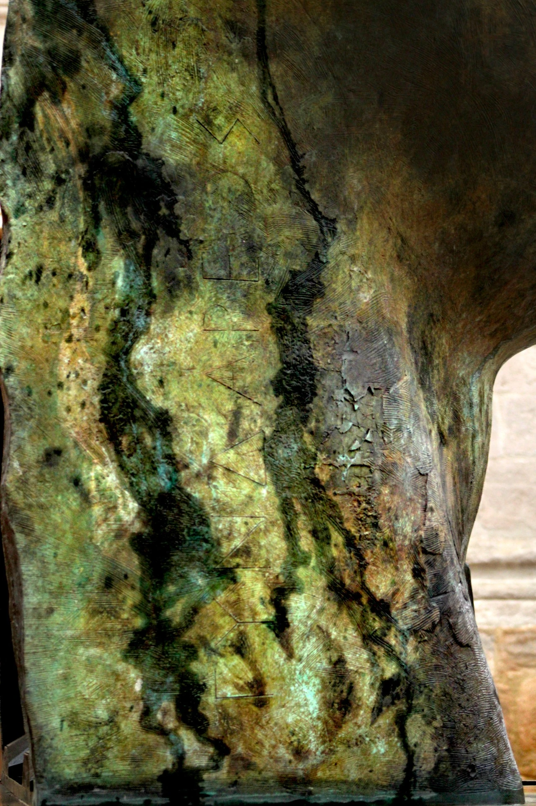
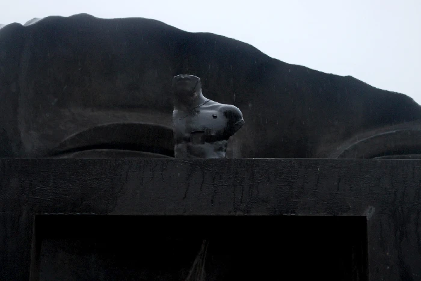
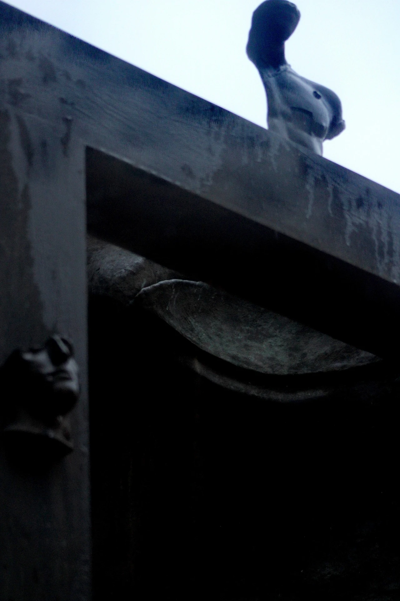
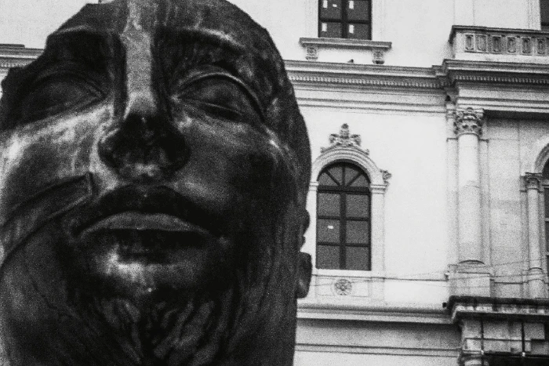
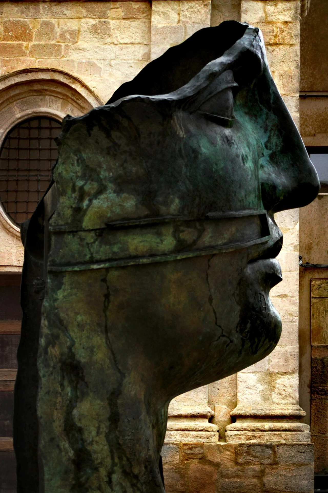
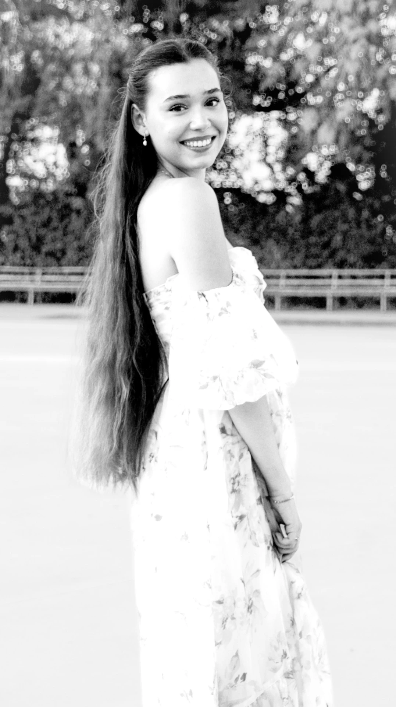
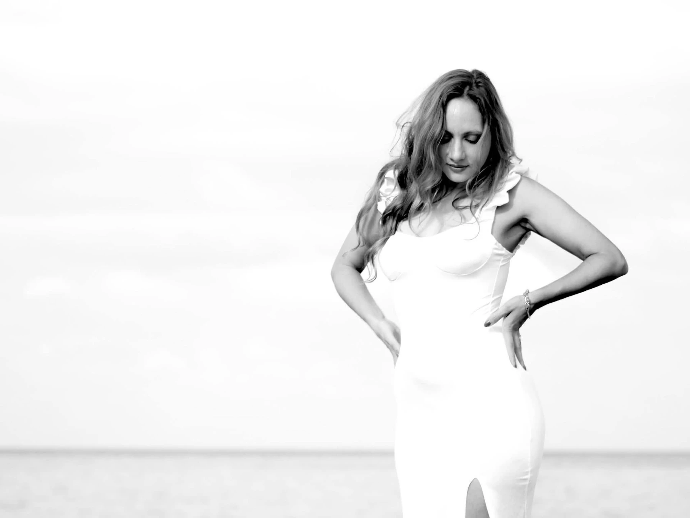
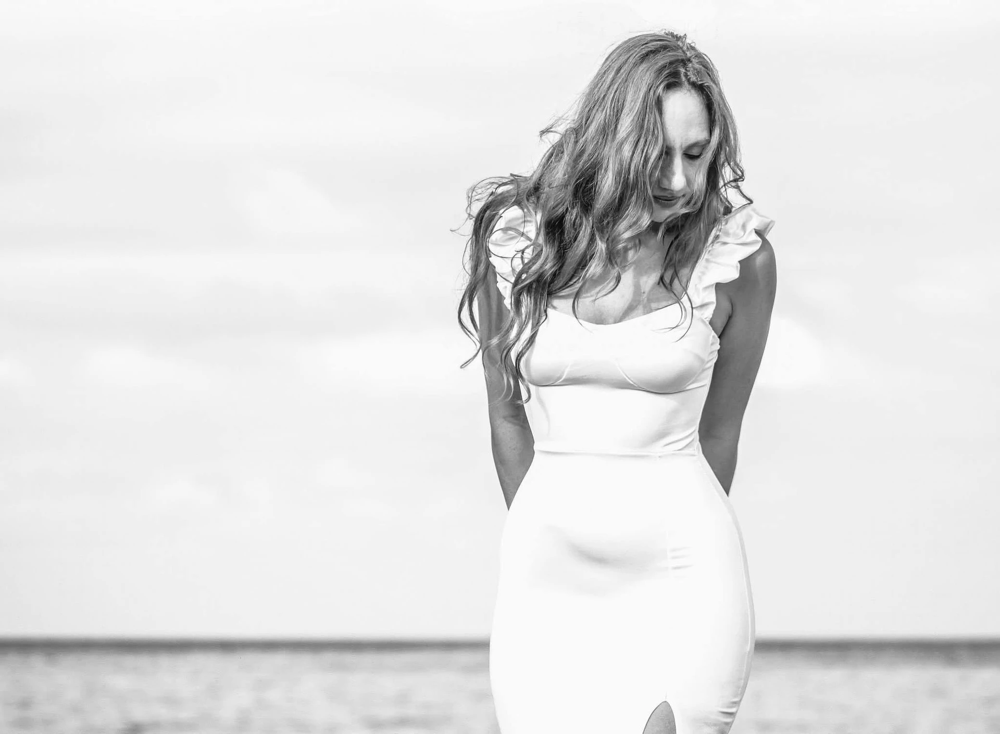

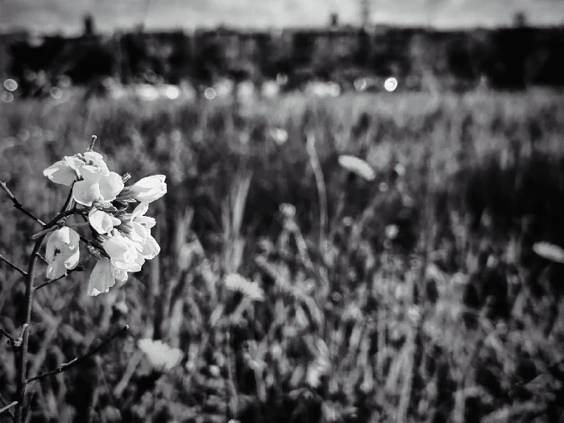
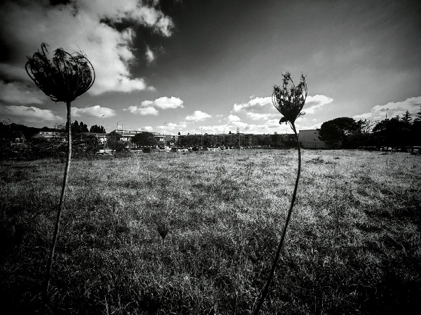
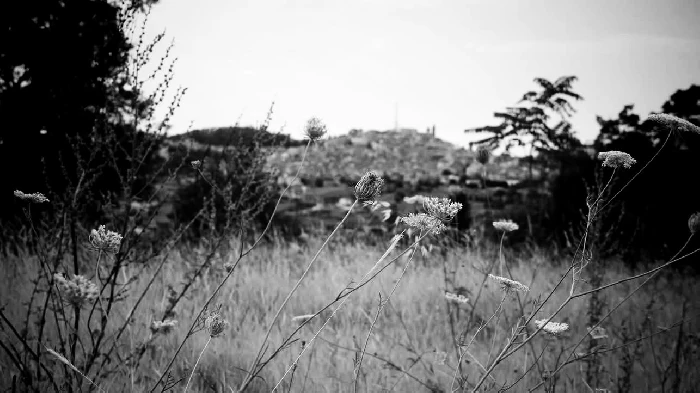
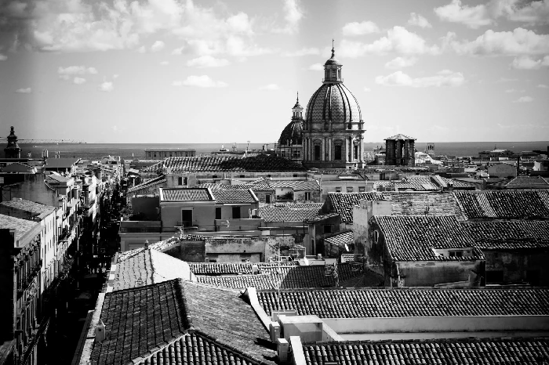
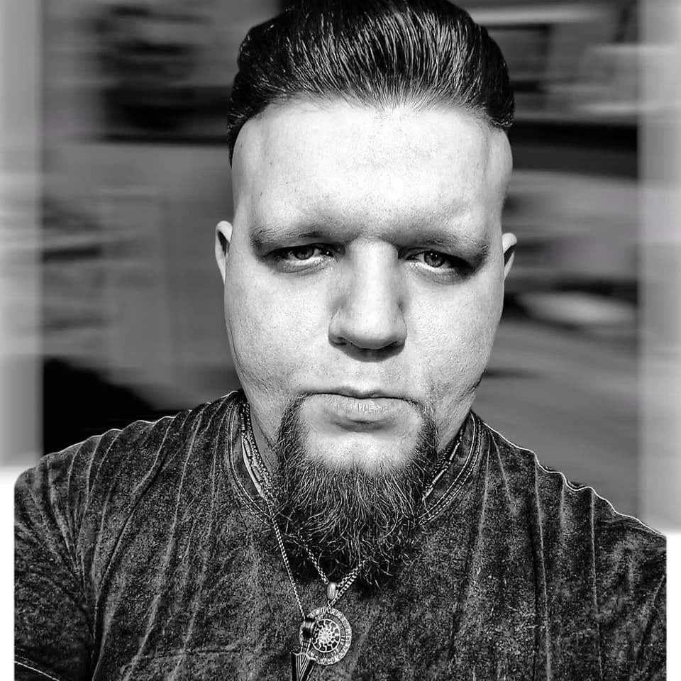